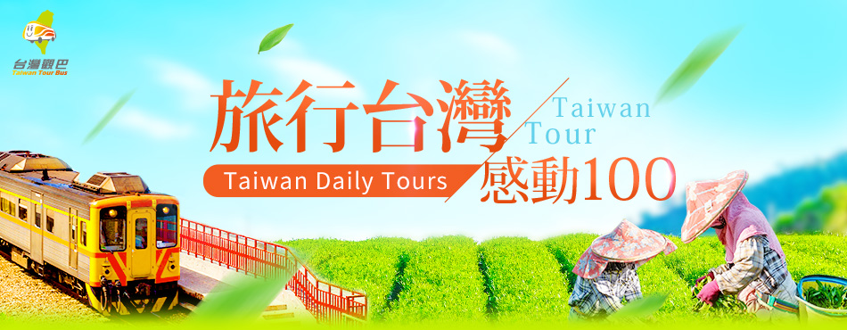

<body>
  <table width="100%"  >
    <tr >
      <td colspan="2" align="center">
        
        
      </td>
    </tr>
      <tr>
      <td colspan="2" >
        <font size="5" align="center">2010-2015 | 創意突破期</font>
        <br>
        <br>
        <font size="3" >建國百年，啟動全新品牌，觀光質量躍升，來台旅客破千萬大關，永續觀光發展。臺灣位處於亞熱帶地區，新折曲地形造就臺灣高低落差極大的地理環境，因此擁有豐富的氣候型態，故有豐富的自然資源。臺灣亦位居東亞地區交通要道，自古以來有各種不同文化進出，擁有原住民、荷蘭、西班牙、中國、日本等多樣性歷史人文資產。 資料來源:https://admin.taiwan.net.tw/TaiwanTourism_60TH/TaiwanTourism.html</font>
      </td>
    </tr>
    <tr>
      
      <td></td>

  </table>
</body>
<!-- Styles -->
<style>
#chartdiv {
  width: 100%;
  height: 500px;
}
<iframe src="timeline.html"width="100%"hight="1000px"style="border:0px"></iframe>
</style>

<!-- Resources -->
<script src="https://cdn.amcharts.com/lib/4/core.js"></script>
<script src="https://cdn.amcharts.com/lib/4/charts.js"></script>
<script src="https://cdn.amcharts.com/lib/4/plugins/timeline.js"></script>
<script src="https://cdn.amcharts.com/lib/4/themes/animated.js"></script>

<!-- Chart code -->
<script>
am4core.ready(function() {

// Themes begin
am4core.useTheme(am4themes_animated);
// Themes end

var chart = am4core.create("chartdiv", am4plugins_timeline.CurveChart);
chart.curveContainer.padding(0, 100, 0, 120);
chart.maskBullets = false;

var colorSet = new am4core.ColorSet();

chart.data = [
  {
    "category": "",
    "year": "2010",
    "size": 1,
    "text": "首次辦理星級旅館評鑑",
    "desc": "7月，首次辦理星級旅館評鑑，提供旅客不同消費選擇，有助提升旅館軟硬體之服務。"
  }, 

  {
    "category": "",
    "year": "2010",
    "size": 1,
    "text": "首度舉辦臺灣自行車節",
    "desc": "10月，首度舉辦「臺灣自行車節」系列活動。"
  }, 

  {
    "category": "",
    "year": "2011",
    "size": 1,
    "text": "推出台灣觀光新品牌",
    "desc": "2月，建國100年，推出台灣觀光新品牌 Taiwan-The Heart of Asia，\n以「亞洲精華・心動台灣」為主題，歡迎全球旅客體驗旅行台灣的感動，\n 並以「Time or Taiwan 旅行台灣，就是現在」訴求台灣觀光新時代的來臨。\n"
  }, 

  {
    "category": "",
    "year": "2012",
    "size": 1,
    "text": "推出旅行台灣APP",
    "desc": "6月，擴大智慧觀光推出「旅行台灣APP」。"
  }, 

  {
    "category": "",
    "year": "2013",
    "size": 1,
    "text": "推動寶島仲夏節",
    "desc": "5月，推出全新觀光大型活動「台灣夏至235」（2018年轉型更名為「寶島仲夏節」）。"
  },  

  {
    "category": "",
    "year": "2014",
    "size": 1,
    "text": "籌組ACC亞洲郵輪聯盟",
    "desc": "4月，與香港簽定「亞洲郵輪專案 ACF（Asia Cruise Fund）」，\n強化亞洲郵輪市場競爭力。2015年更名為亞洲郵輪聯盟ACC（Asia Cruise Cooperation）。"
  }, 


  {
    "category": "",
    "year": "2014",
    "size": 1,
    "text": "超級任務組喔熊組長擔任台灣觀光大使",
    "desc": "6月，觀光局代言人超級任務組「喔熊組長（OhBear）」就任，推動台灣觀光。"
  }, 


   {
    "category": "",
    "year": "2015",
    "size": 1,
    "text": "國際旅客突破1000萬人次",
    "desc": "12月，來台旅客突破1,000萬人次，邁入新里程碑。"
  }, 
  
];

chart.dateFormatter.inputDateFormat = "yyyy";

chart.fontSize = 12;
chart.tooltipContainer.fontSize = 18;

var categoryAxis = chart.yAxes.push(new am4charts.CategoryAxis());
categoryAxis.dataFields.category = "category";
categoryAxis.renderer.grid.template.disabled = true;

var dateAxis = chart.xAxes.push(new am4charts.DateAxis());
dateAxis.renderer.points = [{ x: -400, y: 0 }, { x: 0, y: 50 }, { x: 400, y: 0 }]
dateAxis.renderer.polyspline.tensionX = 0.8;
dateAxis.renderer.grid.template.disabled = true;
dateAxis.renderer.line.strokeDasharray = "1,4";
dateAxis.baseInterval = {period:"day", count:1}; // otherwise initial animation will be not smooth

dateAxis.renderer.labels.template.disabled = true;

var series = chart.series.push(new am4plugins_timeline.CurveLineSeries());
series.strokeOpacity = 0;
series.dataFields.dateX = "year";
series.dataFields.categoryY = "category";
series.dataFields.value = "size";
series.dataFields.desc = "desc";
series.baseAxis = categoryAxis;

var interfaceColors = new am4core.InterfaceColorSet();

series.tooltip.pointerOrientation = "down";

var distance = 80;
var angle = 70;

var bullet = series.bullets.push(new am4charts.Bullet());

var line = bullet.createChild(am4core.Line);
line.adapter.add("stroke", function(fill, target) {
  if (target.dataItem) {
    return chart.colors.getIndex(target.dataItem.index)
  }
});

line.x1 = 0;
line.y1 = 0;
line.y2 = 0;
line.x2 = distance - 10;
line.strokeDasharray = "1,3";

var circle = bullet.createChild(am4core.Circle);
circle.radius = 30;
circle.fillOpacity = 1;
circle.strokeOpacity = 0;

var circleHoverState = circle.states.create("hover");
circleHoverState.properties.scale = 1.5;

series.heatRules.push({ target: circle, min: 20, max: 20, property: "radius" });
circle.adapter.add("fill", function(fill, target) {
  if (target.dataItem) {
    return chart.colors.getIndex(target.dataItem.index)
  }
});
circle.tooltipText = "{text}\n{desc}";
circle.adapter.add("tooltipY", function(tooltipY, target){
  return -target.pixelRadius - 4;
});

var yearLabel = bullet.createChild(am4core.Label);
yearLabel.text = "{year}";
yearLabel.strokeOpacity = 0;
yearLabel.fill = am4core.color("#fff");
yearLabel.horizontalCenter = "middle";
yearLabel.verticalCenter = "middle";
yearLabel.interactionsEnabled = false;

var label = bullet.createChild(am4core.Label);
label.propertyFields.text = "text";
label.strokeOpacity = 0;
label.horizontalCenter = "right";
label.verticalCenter = "middle";

label.adapter.add("opacity", function(opacity, target) {
  if(target.dataItem){
    var index = target.dataItem.index;
    var line = target.parent.children.getIndex(0);

    if (index % 2 == 0) {
      target.y = -distance * am4core.math.sin(-angle);
      target.x = -distance * am4core.math.cos(-angle);
      line.rotation = -angle - 180;
      target.rotation = -angle;
    }
    else {
      target.y = -distance * am4core.math.sin(angle);
      target.x = -distance * am4core.math.cos(angle);
      line.rotation = angle - 180;
      target.rotation = angle;
    }
  }
  return 1;
});

var outerCircle = bullet.createChild(am4core.Circle);
outerCircle.radius = 50;
outerCircle.fillOpacity = 0;
outerCircle.strokeOpacity = 0;
outerCircle.strokeDasharray = "1,3";

var hoverState = outerCircle.states.create("hover");
hoverState.properties.strokeOpacity = 0.8;
hoverState.properties.scale = 1.5;

outerCircle.events.on("over", function(event){
  var circle = event.target.parent.children.getIndex(1);
  circle.isHover = true;
  event.target.stroke = circle.fill;
  event.target.radius = circle.pixelRadius;
  event.target.animate({property: "rotation", from: 0, to: 360}, 4000, am4core.ease.sinInOut);
});

outerCircle.events.on("out", function(event){
  var circle = event.target.parent.children.getIndex(1);
  circle.isHover = false;
});

chart.scrollbarX = new am4core.Scrollbar();
chart.scrollbarX.opacity = 0;
chart.scrollbarX.width = am4core.percent(50);
chart.scrollbarX.align = "center";

}); // end am4core.ready()
</script>

<!-- HTML -->
<div id="chartdiv"></div>